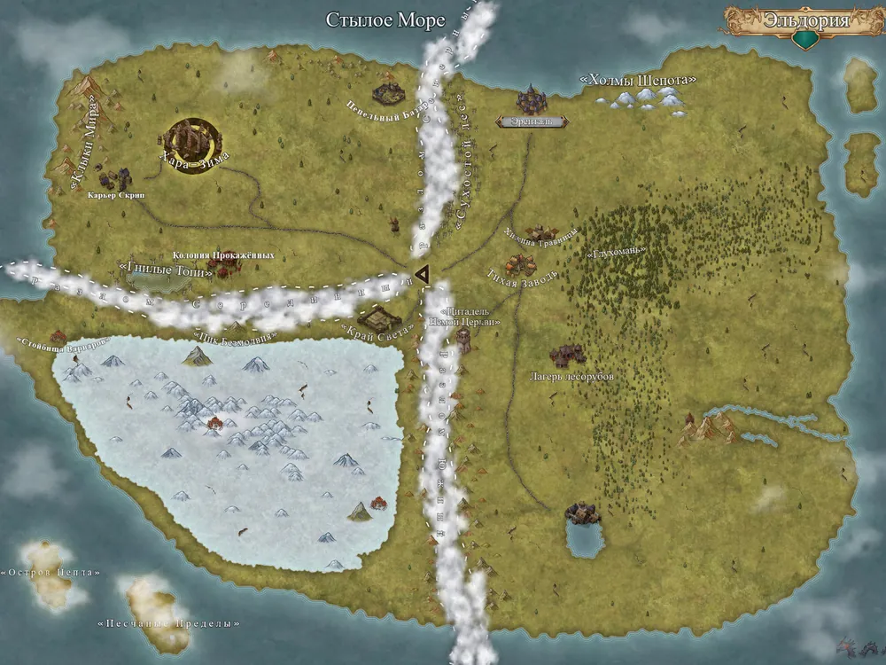
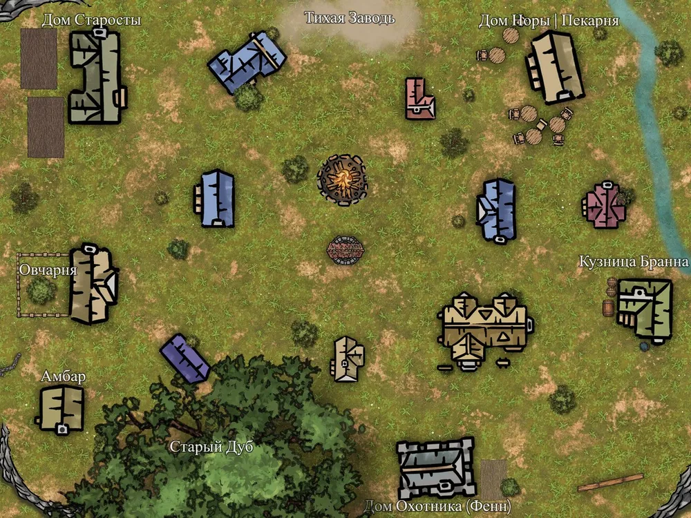
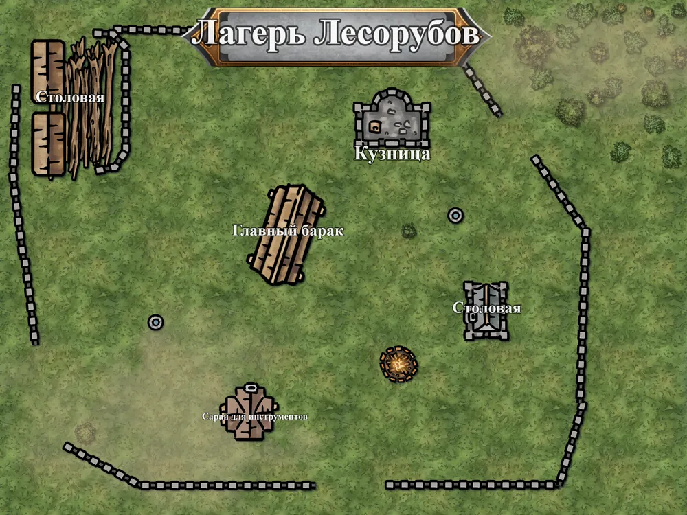

Карты Мира
Нажмите на карту, чтобы открыть её в полном размере и приблизить
Общая карта Валдариса

Полная карта континента с обозначением всех регионов, разломов и древних империй
Деревня Тихая Заводь

Детальная карта стартовой деревни с расположением всех зданий и важных точек
Лагерь Лесорубов

Рабочий лагерь на опушке Глухомани, в полудне пути от Тихой Заводи. Место, где рубят лес и ночуют в бараках